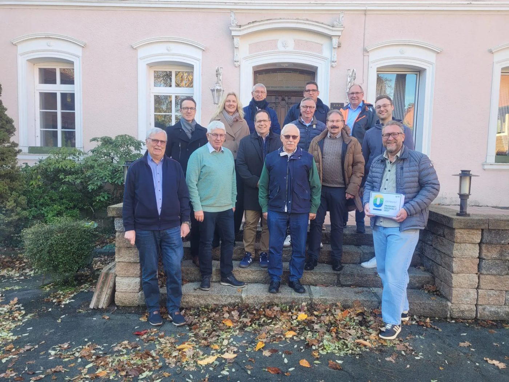

Haushaltsberatung der FWG: Verantwortungsvoll mit den Finanzen umgehen und wichtige Angebote der Stadt erhalten
Die FWG Oelde berät den Haushaltsentwurf 2027 der Stadt gemeinsam mit der Verwaltungsspitze.

Zu ihren traditionellen Haushaltsberatungen traf sich die FWG Oelde an diesem Wochenende im Landhotel Meier-Gresshoff. Neben Ratsmitgliedern, sachkundigen Bürgern und weiteren Mitgliedern der FWG nahm auch die Verwaltungsspitze mit Bürgermeisterin Karin Rodeheger, dem Ersten Beigeordneten und Kämmerer Michael Jathe, dem Technischen Beigeordneten André Leson sowie Fachbereichsleiter Jakob Schmidt teil.
Der Haushaltsentwurf der Stadt
Im Mittelpunkt des Vormittags stand der intensive Austausch über den Haushaltsentwurf der Stadt Oelde für 2027. Ziel sei es, so die Bürgermeisterin, den Haushalt noch im Dezember im Rat zu verabschieden. Trotz eigener Sparbemühungen, relativ hoher Einnahmen und einer im Kreisvergleich noch recht guten finanziellen Ausgangslage bleibt eine Finanzierungslücke von rund sechs Millionen Euro. Als Maßnahme zur Verbesserung der Einnahmen schlägt die Verwaltung eine Erhöhung des derzeitigen Gewerbesteuerhebesatzes von 413 auf 430 Punkten vor. Der Kämmerer verwies insbesondere auf steigende Energiekosten, eine höhere Kreisumlage, wachsende Personalausgaben und steigende Ausgaben im sozialen Bereich.
Die Bewertung der FWG
Am Nachmittag beschäftigte sich die FWG mit ihrer eigenen Bewertung des Haushalts. Oberstes Ziel muss sein, die finanzielle Handlungsfähigkeit der Stadt und wichtige städtische Angebote auch künftig zu sichern.
Bei den freiwilligen Leistungen sieht die FWG nur geringe Einsparmöglichkeiten. Kürzungen bei Vereinen und im Ehrenamt sind wenig sinnvoll, sogar kontraproduktiv, und würden das Haushaltsdefizit kaum verringern. Auch die Schulsozialarbeit, mit über 400.000 Euro der größte Posten bei den freiwilligen Ausgaben, muss aufgrund ihrer gesellschaftlichen Bedeutung erhalten bleiben.
Künftige städtische Investitionen sollten allerdings konsequenter auf ihre Folgekosten geprüft und stärker priorisiert werden. Für das Oelder Forum sieht die FWG in den kommenden Jahren beispielsweise keinen zusätzlichen Investitionsbedarf, da dort in jüngerer Vergangenheit bereits viel investiert worden ist. Auf eigene kostenträchtige Anträge will man angesichts der angespannten Haushaltslage verzichten. Eine Ausnahme sind Trinkwasserspender für Grund- und weiterführende Schulen angesichts der zunehmenden Hitzeperioden.
Kreisumlage und Gewerbesteuer
Kritisch bewertet die FWG die geplante Erhöhung der Kreisumlage auf voraussichtlich 38,5 Prozent, die Oelde mit knapp einer Million Euro zusätzlich belasten würde. Hier erwartet die FWG vom Kreis deutlich engagiertere Bemühungen um Sparsamkeit und eine konsequentere Überprüfung der eigenen Ausgaben, bevor die finanzielle Belastung weiter an die Städte und Gemeinden weitergegeben wird. Eine unpopuläre Gewerbesteuererhöhung, die jetzt nach 13 Jahren angedacht ist, würde die FWG notfalls mittragen, die konkrete Höhe jedoch von den weiteren Beratungsergebnissen abhängig machen.
Oelde muss auch in Zukunft finanziell eigenverantwortlich handlungsfähig bleiben.
Sd., 15.11.2026